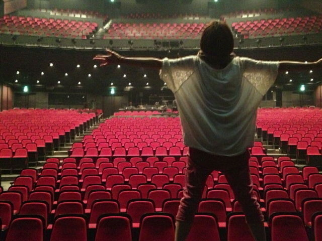

こんにちは！ななみです！
プリンシパル東京公演、
無事終了しました〜〜〜！！！！！d=(^o^)=b
来て下さった皆さん、
応援してくれた皆さん、
メンバーみんな、スタッフの皆さん
本当に本当にありがとうございました！！！
この公演では、私を認めてもらうことを目標に頑張りました。
BBJでも大事な役をもらったり、
次のシングルではフロントだったり、
山下監督との映画が控えていたり、
今年はたくさんチャンスを貰ってます。
特に演技でのお仕事をもらうことが多い中、自分でも自分の実力が足りていないと感じることが多々ありました。もちろん今も感じています。
でも今回の公演をきっかけに
橋本になら任せてもいいわ、と
メンバーやファンの皆さんに思ってもらえたらいいなと思い
私はいかにたくさんの役に選ばれるかというよりは、２幕での演技に比重を置きました。
あらかじめ準備していた栄役
付け焼き刃だった明田川役
ぶっつけ本番だったけど、意外とやりやすかったいつみ役
ぶっつけ本番でダメダメだったひさこ役
いかにアドリブで舞台に存在感を残すかの女中
色々やりましたが、
少しでも私の成長を感じてもらえていたら
私にとってこの公演が成功だと思えます！
皆さんのブログのコメント読みました！
嬉しい！ありがとう！
これからも、一つ一つのお仕事で
成長していく姿を観てほしいです！
人の心を動かすお仕事をしたいです！
自らハードル上げてしまった 笑

これからもがんばります！